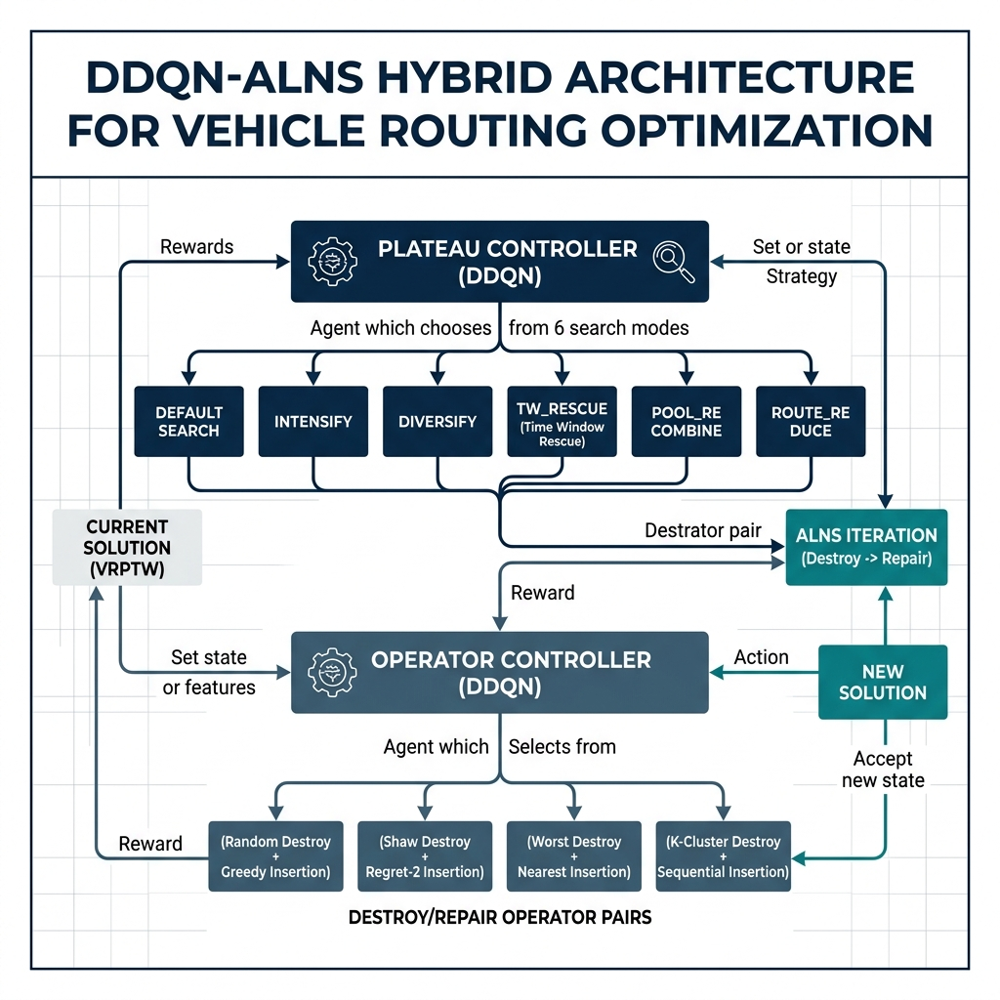
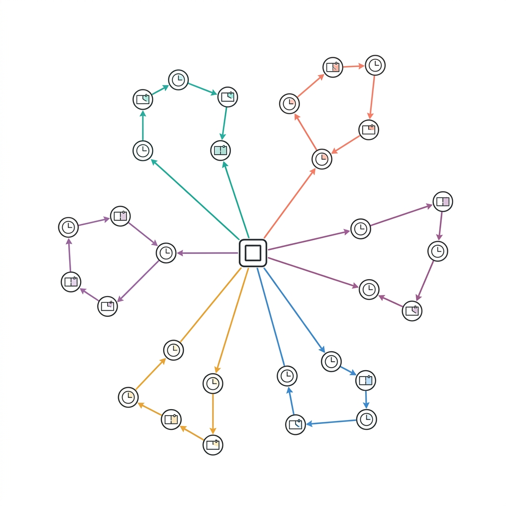

Bài toán VRPTW (Vehicle Routing Problem with Time Windows) thuộc lớp NP-khó, là bài toán cốt lõi trong logistics đô thị, yêu cầu tối thiểu hóa đồng thời số lượng phương tiện và tổng quãng đường trong khi tuân thủ nghiêm ngặt ràng buộc sức tải và khung thời gian phục vụ.
Các phương pháp hiện tại gặp hạn chế: ALNS truyền thống dùng luật cứng thiếu thích ứng; bộ giải thương mại (OR-Tools) hy sinh tối ưu đội xe để đạt đường ngắn. Nghiên cứu này đề xuất DDQN-ALNS — tích hợp học tăng cường sâu vào ALNS để điều khiển chiến lược tìm kiếm tự động.
- Điều khiển thông minh chế độ tìm kiếm bằng DDQN
- Lựa chọn toán tử destroy/repair tối ưu bằng DRL
- Đạt chất lượng cạnh tranh BKS trên Solomon benchmark
- Chứng minh khả năng tổng quát hóa qua Domain Randomization
Đồ thị định hướng G = (V, A), đội xe đồng nhất K phương tiện sức tải Q. Hàm mục tiêu phân cấp:
Hệ ràng buộc: phục vụ đúng 1 lần (1.2), bảo toàn luồng (1.5), sức tải (1.6), tính tuần tự thời gian (1.7), khung thời gian [Ei, Li] (1.8).
Hằng số M ≫ tổng khoảng cách → ưu tiên tuyệt đối: ít xe trước, ngắn đường sau.

Hệ thống gồm 3 thành phần chính:
- Plateau Controller (DDQN): Quyết định 1/6 chế độ tìm kiếm (default, intensify, diversify, tw_rescue, pool_recombine, route_reduce) dựa trên state 12 chiều.
- Operator Controller (DDQN): Lựa chọn cặp toán tử tối ưu trong 40 tổ hợp (8 Destroy × 5 Repair), kết hợp UCB + Thompson Bandit.
- Learned Acceptance Criterion: Mạng phân loại nhị phân thay thế Simulated Annealing cổ điển.
8 Toán tử Phá hủy
- Random Removal
- Worst Removal (power-law)
- Shaw Relatedness
- Route Portion Removal
- TW-Urgent Removal
- Route Eliminate
- Dispersion Eliminate
- Cross-Route Shaw
5 Toán tử Sửa chữa
- Greedy Insertion
- Regret-2 Insertion
- Regret-3 Insertion
- TW-Greedy Insertion
- FTS-Greedy (Forward Time Slack)
s.t. Σj aij·yj = 1 ∀i∈C; Σyj ≤ NVceiling
Tái tổ hợp tuyến đường tối ưu từ Route Pool bằng SciPy MILP solver (4s time limit). Phạt phương tiện P = 100·dmax·n.
Dueling DQN Architecture: Trunk 2×128 + LayerNorm + ReLU → Value Head V(s) + Advantage Head A(s,a):
Hàm phần thưởng thế năng thích ứng:
Pot(s) = −λ·γnv·ΔNV/NVinit − (1−λ)·γcost·Δcost/costbest·100
Reward = 0.30·Base + (γdrl·Pot(s') − Pot(s))
Hệ số: γnv=15.0, γcost=0.18 → ưu tiên giảm xe trước khi tối ưu khoảng cách.
Operator Selection UCB Augmentation:

| Lớp | Thuật Toán | NVmean | TDmean | Gap% | Time(s) |
|---|---|---|---|---|---|
| RC1 | ALNS-Base | 12.575 | 1327.91 | +1.909% | 19.2 |
| Hybrid-Fixed | 12.300 | 1302.48 | -0.055% | 36.7 | |
| Hybrid-Rule | 12.250 | 1298.41 | -0.368% | 36.6 | |
| Hybrid-DDQN ĐỀ XUẤT | 12.350 | 1298.54 | -0.358% | 40.3 | |
| OR-Tools NV↑ | 13.625 | 1343.35 | +3.088% | 60.1 | |
| RC2 | ALNS-Base | 3.500 | 1146.51 | +2.774% | 19.2 |
| Hybrid-Fixed | 3.400 | 1131.42 | +1.425% | 36.7 | |
| Hybrid-Rule | 3.400 | 1128.16 | +1.130% | 36.6 | |
| Hybrid-DDQN ĐỀ XUẤT | 3.475 | 1125.55 | +0.898% | 40.3 | |
| OR-Tools NV↑ | 6.250 | 1034.02 | -7.350%* | 60.1 |
* OR-Tools RC2: Gap% âm do sử dụng gấp đôi số xe (6.25 vs 3.47), không kinh tế.
So sánh Gap% trên RC1 + RC2 (thấp hơn = tốt hơn)
Mô hình huấn luyện trên dữ liệu nhân tạo ngẫu nhiên (25–100 khách hàng), đóng băng trọng số, test trên toàn bộ 56 thực thể Solomon:
| Lớp | NV | TD | Gap% |
|---|---|---|---|
| C1 | 10.000 | 831.92 | +0.36% |
| R1 | 12.867 | 1210.82 | −0.17% |
| RC1 | 12.725 | 1318.23 | +1.17% |
| C2 | 3.000 | 620.43 | +4.88% |
| R2 | 3.091 | 933.24 | +1.12% |
| RC2 | 3.575 | 1156.02 | +3.63% |
| AVG | 7.729 | 1011.78 | +1.62% |
→ Mô hình không cần fine-tune trên dữ liệu mới, triển khai dạng plug-and-play.
- Tích hợp Double DQN hai lớp (Plateau + Operator Controller) điều khiển tự động chiến lược tìm kiếm ALNS
- Learned Acceptance Criterion (LAC) thay thế Simulated Annealing, quyết định chấp nhận dựa trên học máy
- Toán tử FTS-Greedy + Set Partitioning MILP giải quyết triệt để ràng buộc khung thời gian chặt
- Gap% chỉ 0.27% so với BKS, vượt trội OR-Tools về quy mô đội xe (7.61 vs 8.84 xe)
- Domain Randomization đạt Gap% 1.62% trên 56 instances khi đóng băng trọng số — chứng minh khả năng tổng quát hóa
- Bi et al. (2022). A reinforcement learning-aided adaptive large neighborhood search heuristic for the vehicle routing problem with time windows. IEEE Transactions on Cybernetics, 52(9).
- Hottung & Tierney (2020). Neural large neighborhood search for the capacitated vehicle routing problem. ECAI.
- Kool et al. (2018). Attention, learn to solve routing problems! ICLR.
- Kool et al. (2021). Deep policy dynamic programming for vehicle routing. NeurIPS.
- Ropke & Pisinger (2006). An adaptive large neighborhood search heuristic for the pickup and delivery problem with time windows. Transportation Science, 40(4).
- Solomon, M. M. (1987). Algorithms for the vehicle routing and scheduling problems with time window constraints. Operations Research, 35(2).
- Wang et al. (2016). Dueling network architectures for DRL. ICML.